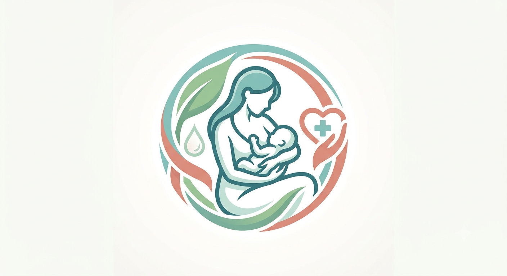
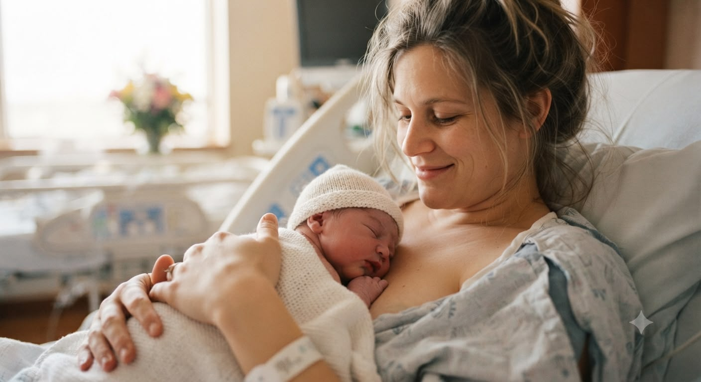
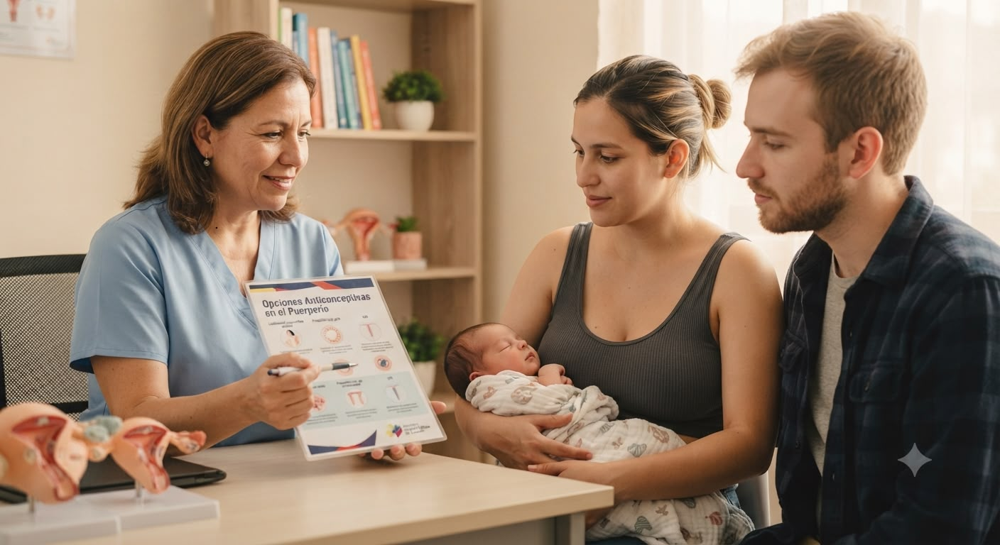
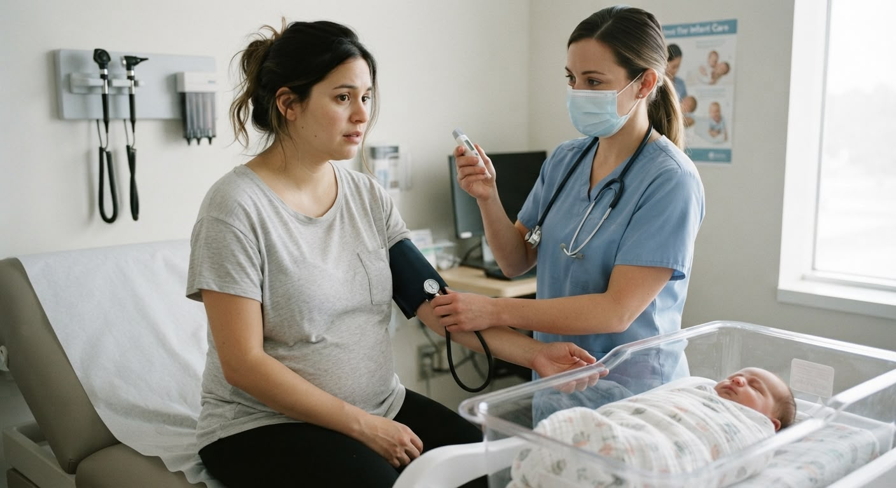
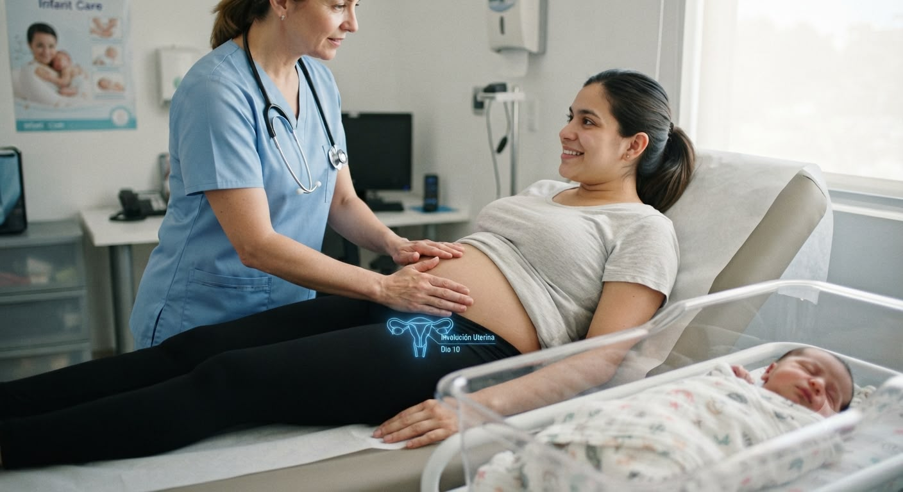
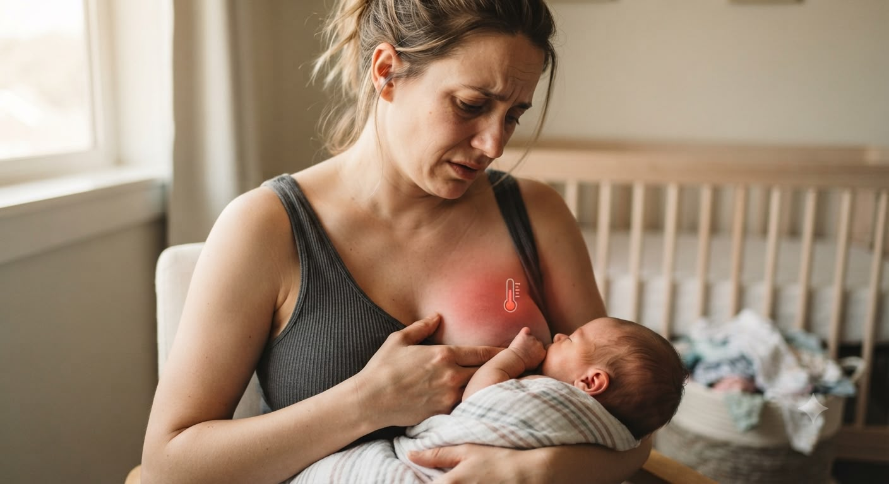

Hemorragia posparto
Es una pérdida excesiva de sangre después del parto y requiere atención médica inmediata.

El cuidado de la madre después del parto
“El nacimiento del bebé también marca el inicio de una nueva etapa para la madre. Conocer el puerperio permite cuidar la salud de la madre, favorecer su recuperación y reconocer a tiempo cualquier signo de alarma.”
El puerperio es el período que comienza inmediatamente después del parto y durante el cual el cuerpo de la mujer inicia su recuperación. En esta etapa, el útero vuelve poco a poco a su tamaño normal, se producen cambios hormonales, comienza la lactancia y la madre se adapta física y emocionalmente a su nueva etapa.
Recuerda: cada mujer vive el puerperio de manera diferente y su recuperación puede variar.

Primeras 24 horas después del parto.
Es la etapa de mayor vigilancia porque existe mayor riesgo de hemorragia. El personal de salud controla constantemente el estado de la madre.
Desde el segundo hasta el séptimo día.
El cuerpo continúa recuperándose, disminuye el tamaño del útero y se establece la producción de leche materna.
Desde el octavo día hasta las seis semanas.
Los órganos reproductores terminan su recuperación y la madre se adapta progresivamente a su nueva rutina.
Toca cada tarjeta para conocer los detalles.
Después del parto, el útero comienza a contraerse para recuperar el tamaño que tenía antes del embarazo. Este proceso es completamente normal.
Los loquios son el sangrado normal que aparece después del parto. Su color cambia con el paso de los días:
Después del nacimiento del bebé disminuyen algunas hormonas del embarazo y aumentan las encargadas de producir leche materna. Estos cambios también pueden influir en el estado de ánimo.
Durante los primeros días se produce el calostro, un alimento rico en defensas para el bebé. Posteriormente aparece la leche madura.
La lactancia también ayuda a que el útero se contraiga más rápidamente.
Es normal que durante los primeros días la madre:
Durante el puerperio es común presentar:
Estos síntomas suelen disminuir poco a poco con el paso de los días.
Aunque la mayoría de las mujeres se recuperan sin problemas, algunas pueden presentar complicaciones.
Es una pérdida excesiva de sangre después del parto y requiere atención médica inmediata.
Pueden presentarse en el útero, en la herida de una cesárea o en el área del parto.
Es una infección de la mama que produce dolor, enrojecimiento, inflamación y fiebre.
Algunas madres pueden sentir tristeza intensa, ansiedad, pérdida de interés por las actividades diarias o dificultad para cuidar de sí mismas y del bebé.
Consiste en la formación de coágulos en las venas, generalmente de las piernas. Es una complicación poco frecuente, pero requiere atención inmediata.


Busca atención médica de inmediato si presentas:
No esperes a que los síntomas empeoren.

Durante el puerperio, el personal de salud realiza controles para verificar que la recuperación sea adecuada. Estos controles incluyen:
La recuperación depende principalmente de los cuidados diarios. Se recomienda:

El personal de enfermería cumple un papel fundamental durante el puerperio. Entre sus principales funciones están:
La lactancia materna ayuda al útero a recuperar su tamaño más rápidamente.
Los loquios cambian de color conforme el cuerpo se recupera.
Descansar favorece una recuperación física y emocional más rápida.
El apoyo de la familia es fundamental para el bienestar de la madre durante el puerperio.
Acudir a los controles posparto permite detectar a tiempo cualquier complicación.
Cuidar a la madre durante el puerperio es tan importante como cuidar al recién nacido. Una recuperación segura, acompañada de información, apoyo familiar y controles de salud, favorece el bienestar de la madre, fortalece el vínculo con su bebé y contribuye a una maternidad saludable.